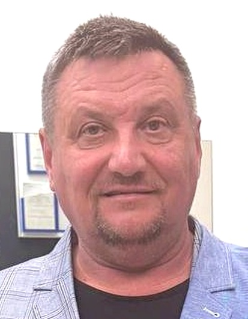

Проблема з поточною темою часто має причину на кілька років раніше: не засвоєні дроби призводять до проблем з алгеброю, потім із функціями, а далі стає незрозумілою фізика. Проблема с текущей темой часто имеет причину на несколько лет раньше: неусвоенные дроби приводят к проблемам с алгеброй, потом с функциями, а дальше становится непонятной физика.
Закінчив фізико-технічний факультет Харківського національного університету імені В. Н. Каразіна. За 35 років викладацької діяльності працював у школах, ліцеях та вищих навчальних закладах, а також як приватний репетитор з математики, фізики та хімії.
Брав участь у створенні українського аналога ЄДІ — зовнішнього незалежного оцінювання (ЗНО), що дає глибоке розуміння логіки екзаменаційних вимог і того, як готувати учнів саме до них.
Окончил физико-технический факультет Харьковского национального университета имени В. Н. Каразина. За 35 лет преподавательской деятельности работал в школах, лицеях и вузах, а также как частный репетитор по математике, физике и химии.
Участвовал в создании украинского аналога ЕГЭ — внешнего независимого оценивания (ЗНО), что даёт глубокое понимание логики экзаменационных требований и того, как готовить учеников именно к ним.
Базова фізико-математична освіта, місто Харків.
Базовое физико-математическое образование, город Харьков.
Фізика, математика — очне викладання на різних освітніх рівнях.
Физика, математика — очное преподавание на разных образовательных уровнях.
Робота над українським аналогом ЄДІ — зовнішнім незалежним оцінюванням.
Работа над украинским аналогом ЕГЭ — внешним независимым оцениванием.
Індивідуальна підготовка учнів з Чернігова, Києва та інших міст.
Индивидуальная подготовка учеников из Чернигова, Киева и других городов.
Додати після отримання скану (можна приховати особисті дані). Добавить после получения скана (можно скрыть личные данные).
Коротке відео-знайомство українською. Короткое видео-знакомство на русском.
2003–2013 рр. Один із навчальних посібників офіційно рекомендований Міністерством освіти і науки України для студентів вищих навчальних закладів. 2003–2013 гг. Одно из учебных пособий официально рекомендовано Министерством образования и науки Украины для студентов высших учебных заведений.
Список наведено мовою оригіналу публікації. Список приведён на языке оригинала публикации.
За першу зустріч викладач визначає: За первую встречу преподаватель определяет:
Після зустрічі батьки отримують зрозумілу картину: де ми зараз → куди прямуємо → що для цього потрібно зробити. После встречи родители получают понятную картину: где мы сейчас → куда идём → что для этого нужно сделать.
Записатися на діагностику Записаться на диагностикуЗаняття триває 60 хвилин. Темп і план заняття підлаштовуються під конкретного учня — це не однакові уроки для всіх. Занятие длится 60 минут. Темп и план занятия подстраиваются под конкретного ученика — это не одинаковые уроки для всех.
Усунути прогалини, підвищити успішність, почати розуміти предмет, підготуватися до контрольних.
Устранить пробелы, повысить успеваемость, начать понимать предмет, подготовиться к контрольным.
Системна підготовка до НМТ/ЗНО та інших іспитів, стратегія підготовки, робота з типовими помилками.
Системная подготовка к НМТ/ЗНО и другим экзаменам, стратегия подготовки, работа с типичными ошибками.
Вища математика та фізика, складні теми, підготовка до заліків та іспитів.
Высшая математика и физика, сложные темы, подготовка к зачётам и экзаменам.
Дитина навчається в іншій країні, але складну математику може розбирати рідною мовою, якою дійсно розуміє пояснення.
Ребёнок учится в другой стране, но сложную математику может разбирать на языке, на котором действительно понимает объяснение.
Математика і фізика стають значно простішими, коли учень розуміє зв'язки між поняттями, а не намагається запам'ятати набір формул і алгоритмів. Завдання викладача — не розв'язати задачу замість учня, а навчити його бачити структуру задачі, обирати спосіб розв'язання і перевіряти власне міркування. Математика и физика становятся значительно проще, когда ученик понимает связи между понятиями, а не пытается запомнить набор формул и алгоритмов. Задача преподавателя — не решить задачу вместо ученика, а научить его видеть структуру задачи, выбирать способ решения и проверять собственное рассуждение.
Відгук учня — підпис додасте пізніше. Отзыв ученика — подпись добавите позже.
Відгук учня — підпис додасте пізніше. Отзыв ученика — подпись добавите позже.
Відгук учня — підпис додасте пізніше. Отзыв ученика — подпись добавите позже.
Алгебра, геометрія, підготовка до контрольних, ЗНО/НМТ та вступних іспитів.
Алгебра, геометрия, подготовка к контрольным, ЗНО/НМТ и вступительным экзаменам.
Механіка, електрика, оптика — від шкільної програми до вступу у виш.
Механика, электричество, оптика — от школьной программы до поступления в вуз.
Основи хімії у зв'язці з фізикою та математикою — для повного розуміння предмету.
Основы химии в связке с физикой и математикой — для полного понимания предмета.
Перша зустріч — це діагностика знань, яка одночасно виконує роль пробного заняття: ви побачите, як проходить робота, а викладач визначить рівень і план підготовки. Умови діагностики — за домовленістю під час першого контакту. Первая встреча — это диагностика знаний, которая одновременно выполняет роль пробного занятия: вы увидите, как проходит работа, а преподаватель определит уровень и план подготовки. Условия диагностики — по договорённости при первом контакте.
Уточнюється — платформа (Zoom, Google Meet або інша) погоджується під час запису на діагностику. Уточняется — платформа (Zoom, Google Meet или другая) согласовывается при записи на диагностику.
Напишіть заздалегідь — час можна узгодити й перенести на зручний день. Напишите заранее — время можно согласовать и перенести на удобный день.
Після діагностики батьки отримують зрозумілий план: де ми зараз і куди прямуємо. Далі прогрес обговорюється по ходу занять. После диагностики родители получают понятный план: где мы сейчас и куда движемся. Далее прогресс обсуждается по ходу занятий.
Програма індивідуальна, тому темп і план можна скоригувати в будь-який момент — це не однакові уроки для всіх учнів. Программа индивидуальна, поэтому темп и план можно скорректировать в любой момент — это не одинаковые уроки для всех учеников.
Натисніть на день і час — вони підставляться у форму нижче, залишиться лише вписати ім'я та телефон. Нажмите на день и время — они подставятся в форму ниже, останется только вписать имя и телефон.
Залиште контакт — і ми домовимось про зручний час. Заняття проходять онлайн. Оставьте контакт — и мы договоримся об удобном времени. Занятия проходят онлайн.